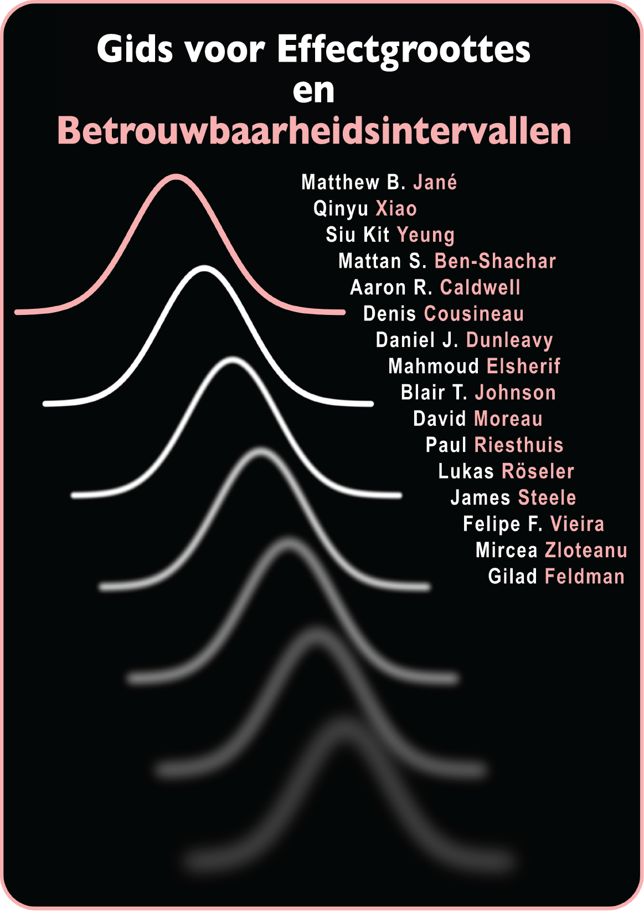

Gids voor Effect Sizes en Betrouwbaarheids Intervallen
Aaron R. Caldwell ![]()
Paul Riesthuis
Felipe F. Vieira
samenwerken, betrouwbaarheidsinterval, effect size, open onderwijsbron, open studiebeurs, open wetenschap
Welkom

Deze gids voor samenwerking op het gebied van effect sizes en betrouwbaarheidsintervallen is bedoeld om academici, studenten en onderzoekers te voorzien van praktische, stapsgewijze instructies. Hij is er voor het berekenen van effect sizes en betrouwbaarheidsintervallen voor veelgebruikte statistische toetsen in de gedrags-, cognitieve en sociale wetenschappen, met name wanneer originele gegevens niet beschikbaar zijn en wanneer gerapporteerde informatie onvolledig is. De gids introduceert ook algemene achtergrondinformatie over effect sizes en betrouwbaarheidsintervallen, evenals nuttige R-pakketten voor de berekening ervan. Veel van de methoden en procedures die in deze gids worden beschreven, zijn gebaseerd op R of op R gebaseerde Shiny Apps die zijn ontwikkeld door de wetenschappelijke gemeenschap. We waren gemotiveerd om ons op R te richten omdat we de reproduceerbaarheid van onze onderzoeksresultaten willen maximaliseren en de meest reproduceerbare onderzoeksplanning en data-analyse workflow willen aanmoedigen, hoewel we waar mogelijk ook andere methoden documenteren ter referentie van onze lezers. We werken deze open educatieve bron regelmatig bij, omdat pakketten vaak worden bijgewerkt en er van tijd tot tijd nieuwe pakketten worden ontwikkeld in dit snel veranderende Open Scholarship-tijdperk.
Introductie
Effect sizes en betrouwbaarheidsintervallen zijn belangrijke maatstaven voor het interpreteren van resultaten en het kwantificeren van de omvang van bevindingen in wetenschappelijk onderzoek. Het berekenen van deze waarden kan echter een uitdaging zijn, vooral wanneer originele gegevens niet beschikbaar zijn of wanneer resultaten onvolledig zijn gerapporteerd in eerdere publicaties. Om in deze behoefte te voorzien biedt onze gezamenlijke gids praktische instructies voor het berekenen van effect sizes en betrouwbaarheidsintervallen voor veelvoorkomende statistische toetsen in de gedrags-, cognitieve en sociale wetenschappen. Onze gids bevat achtergrondinformatie over deze concepten en aanbevelingen voor nuttige R-pakketten die veel van deze berekeningen kunnen automatiseren. De nadruk ligt op R vanwege de mogelijkheden voor reproduceerbare analyses, maar we behandelen ook alternatieve methoden voor mensen zonder expertise in R. Deze gids is bedoeld als een evoluerende open educatieve bron, die wordt bijgewerkt als er nieuwe methoden en pakketten beschikbaar komen in dit snel veranderende tijdperk van open wetenschap. Door deze toegepaste instructies te compileren, is het ons doel om studenten en onderzoekers in staat te stellen deze metrieken gemakkelijk te verkrijgen, wat robuuste en transparante kwantificering van resultaten en cumulatieve wetenschappelijke vooruitgang mogelijk maakt.
Richtlijnen voor bijdrage
Iedereen wordt aangemoedigd om bij te dragen aan deze gids. Houd er rekening mee dat deze gids voortdurend in ontwikkeling is en dus voor onbepaalde tijd een werk in uitvoering zal blijven. Dit is bedoeld omdat we hopen dat de gids altijd de laatste stand van de techniek op het gebied van effectgroottes en betrouwbaarheidsintervallen weergeeft. Om bij te dragen, zijn er nu twee opties:
- U kunt bewerkingen voorstellen en opmerkingen maken in de volgende google doc: mgto.org/effectsizeguide.
- U kunt bewerkingen rechtstreeks in het online boek voorstellen met behulp van Hypothes.is. Hiervoor moet je een gratis account aanmaken op hypothes.is (hypothes.is/signup; dit duurt ongeveer een minuut). Wanneer je vervolgens naar het online boek navigeert, kun je het paneel rechtsboven in het scherm openen. Daar kun je bewerkingen voorstellen en opmerkingen maken met code en latex!
Opmerkingen
- Gebruik de koppen en stijl die in dit document worden beschreven. Je kunt sneltoetsen gebruiken zoals Ctrl + Alt + 1/2/3. De normale tekst is in het lettertype Times New Roman, lettergrootte 11. De codes zijn opgemaakt met de Code Blocks add-on van Google Docs, github-thema, lettergrootte 8.
- Gebruik de modus Suggesting in plaats van de modus Editing. Voorstellen is nu de standaardmodus voor dit document. Aarzel daarom niet om fouten te corrigeren of de inhoud direct aan te passen.
- Voeg een opmerking toe aan het document als je iets mist of onjuist vindt, of als je vindt dat dingen beter op een andere manier georganiseerd kunnen worden. We stellen je suggesties op prijs. Als je vragen hebt, plaats dan ook een opmerking. We zullen antwoorden en proberen duidelijkheid te verschaffen in de hoofdtekst van het document.
- Maak correcte citaten (in APA 7e formaat) en geef relevante links wanneer je verwijst naar een bron die niet van jezelf is.
Naamsvermelding en auteurschap
Als u van mening bent dat u voldoende hebt bijgedragen om als auteur te worden aangemerkt en u wilt als auteur van deze gids worden vermeld, aarzel dan niet en vermeld uw naam en contactgegevens hieronder. De beheerders (M.B.J., Q.X., S.K.Y. en G.F.) van deze gids zullen uw bijdrage verifiëren en u toevoegen aan de auteurslijst. Wij verwelkomen commentaar van iedereen, ongeacht of hij of zij auteur wil zijn.
De volgorde van auteurschap is zodanig dat M. B. J. en Q. X. de eerste twee auteurs zijn, S. K. Y. de tweede auteur en G. F. de laatste en corresponderende auteur. Alle andere bijdragers worden alfabetisch in het midden vermeld en worden allemaal beschouwd als gezamenlijke derde auteurs. Medewerkers krijgen standaard de CRediT-auteursrollen onderzoek, schrijven - oorspronkelijke concept, en schrijven - revisie & redactie. Het is mogelijk om meer rollen op zich te nemen als deelnemers dat willen. Elke verandering in deze auteursvolgorde moet goedgekeurd worden door iedereen die al als auteur vermeld staat.
Deze gids citeren
Citeer deze gids als volgt:
APA:
Jané, M., Xiao, Q., Yeung, S., *Ben-Shachar, M. S., *Caldwell, A., *Cousineau, D., *Dunleavy, D. J., *Elsherif, M., *Johnson, B., *Moreau, D., *Riesthuis, P., *Röseler, L., *Steele, J., *Vieira, F., *Zloteanu, M., & ^Feldman, G. (2024). Guide to Effect Sizes and Confidence Intervals. http://dx.doi.org/10.17605/OSF.IO/D8C4G
BibTeX:
@misc{jané2024,
title={Guide to Effect Sizes and Confidence Intervals},
url={osf.io/d8c4g},
DOI={10.17605/OSF.IO/D8C4G},
publisher={OSF},
author={Jané, Matthew B and Xiao, Qinyu and Yeung, Siu Kit and *Ben-Shachar, Mattan S and Caldwell, Aaron R and Cousineau, Denis and Dunleavy, Daniel J and Elsherif, Mahmoud M and Johnson, Blair T and Moreau, David and Riesthuis, Paul and Röseler, Lukas and Steele, James and Vieira, Felipe F and Zloteanu, Mircea and Feldman, Gilad},
year={2024}
}